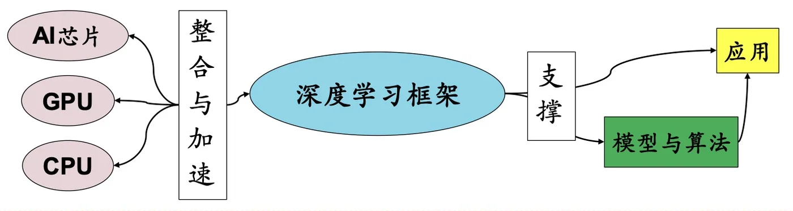

计算机视觉 · 第 5 章 前馈神经网络
5.3 常用的深度学习框架
有了神经元模型，接下来要解决「用什么把它搭起来、跑起来」的问题。这一节先说明深度学习框架在整个技术栈里的位置——它承上启下，向下调动芯片与算力，向上支撑模型与算法；然后分别介绍国外与国内的主流框架，重点讲清静态图与动态图这条分界线，因为它直接影响你写代码和调试的方式。
1. 深度学习框架是人工智能的重要基础软件平台
深度学习框架（平台）是人工智能的核心技术，负责机器学习模型的训练和推理。具体来说它做三件事：
- 管理着人工智能应用所需要的大规模数据和模型，为上层算法和应用提供编程软件平台；
- 统一调度和管理底层的多种计算资源，充分发挥计算潜力；
- 把「模型与算法」与「AI 芯片」隔开：写模型的人不必关心张量到底跑在哪种加速器上，换硬件时上层代码基本不用改。
课件给出的层次关系是自下而上四层应用 → 模型与算法 → 深度学习框架 → AI 芯片（图 1）。越往上越贴近具体任务，越往下越贴近硬件；框架处在中间，是整个栈里最需要「两头都懂」的一层。

2. 常用的深度学习框架（国外）
课件列举了四个国外框架，它们的定位各有侧重：
- PyTorch：Facebook、NVIDIA、Twitter 等公司开发维护的深度学习框架；
- Theano：蒙特利尔大学的 Python 工具包，是早期深度学习研究的常用工具；
- Caffe：加州大学伯克利分校开发的、针对卷积神经网络的计算框架；
- TensorFlow：Google 公司开发的深度学习框架。
（1）静态图与动态图
这四个框架里，今天真正被广泛使用的是 PyTorch 和 TensorFlow，而它们最本质的区别在于计算图的构建方式：TensorFlow 采用静态图机制，而 PyTorch 采用动态图机制。
- 静态图：在计算之前要先定义好计算图的结构，然后将数据输入计算图中进行计算。优点是可移植性强、计算效率高——图一旦定下来，框架可以提前做优化；缺点是不够灵活，改了计算逻辑往往要重新构建计算图，影响计算效率，调试也更麻烦。
- 动态图：在运行时根据数据的流动动态地构建计算图并执行计算。优点是更加直观和灵活，方便调试和开发，写起来就像普通的 Python 程序；缺点是每次计算都要重新构建计算图，影响计算效率。
从市场占有情况看，PyTorch 和 TensorFlow 的下载安装占比合计达到 98%，远高于其他框架；产业界以 TensorFlow 为主，学术界以 PyTorch 为主。这个格局并不难理解：产业界看重部署与效率（静态图的强项），学术界看重迭代速度与可调试性（动态图的强项）。
3. 常用的深度学习框架（国内）
国内也有若干成熟的框架，课件列举了四个：
- 飞桨（PaddlePaddle）：百度开发的一个高效和可扩展的深度学习框架（2016 年）；
- 昇思（MindSpore）：华为开发的一种适用于端、边、云场景的深度学习框架（2020 年）；
- 天元（MegEngine）：旷视科技开发的一个快速、可扩展、易于使用且支持自动求导的开源深度学习框架（2020 年）；
- 计图（Jittor）：清华大学开发的一个完全基于动态编译，内部使用创新的元算子和统一计算图的深度学习框架（2020 年）。
注记：课件里把「飞桨」写作「飞浆」，属于笔误；官方名称是飞桨。另外，框架的版本与市场格局变化很快，课件的占比数据反映的是成稿时的状况，不必当作长期结论。
本节小结
- 深度学习框架是人工智能的基础软件平台，负责模型的训练与推理，向下统一调度 AI 芯片等计算资源，向上为算法与应用提供编程平台；技术栈自下而上是 AI 芯片 → 深度学习框架 → 模型与算法 → 应用；
- 国外主流框架有 PyTorch、Theano、Caffe、TensorFlow；国内有飞桨、昇思、天元、计图；
- 静态图（TensorFlow）先定义图再喂数据，可移植性强、效率高，但不灵活、难调试；动态图（PyTorch）边算边建图，直观灵活、便于调试，代价是每次都要重建计算图；
- PyTorch 与 TensorFlow 的下载安装占比合计约 98%，产业界偏 TensorFlow、学术界偏 PyTorch；
- 选框架的核心考量是「部署效率」与「开发调试效率」的取舍，这一点和后面要讲的「模型表达力与训练难度」的取舍是同一类问题。